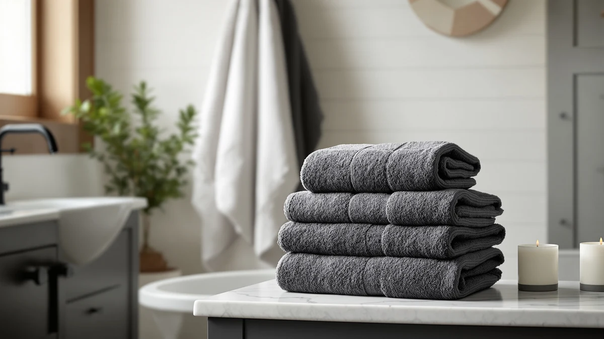

The Best Organic Hand Towels (2026)
Prices and picks verified as of September 2026. Independent, reader-supported reviews.


Quick Answer
Certified organic hand towels are hard to find in stock on Amazon, so we compared seven 100% cotton hand towel and towel sets on material, real sizing, and price per towel instead. The Amazon Basics 6-Piece Fade-Resistant set is our pick for most bathrooms, since it holds full cotton construction at the lowest price of any 6-piece set here.
Our pick: Amazon Basics 6-Piece Fade-Resistant 100% for $18.39 Check Price on Amazon
Bottom line: our top pick is the Amazon Basics 6-Piece Fade-Resistant 100% Cotton Towel Set at $18.39. The best budget option is the Utopia Towels 24 Pack Cotton Washcloths Set at $17.69.
Things to Know Before You Buy
- Certified organic cotton hand towels are rare on Amazon. Most listings that use the word "organic" are actually 100% conventional cotton without a GOTS or other third-party certification, so we vetted for verified cotton content and owner-reported softness instead of a label that gets used loosely.
- Set size determines whether you're buying true hand towels. The two picks listed at 12 by 12 inches are true hand-towel dimensions, while several other picks are 6 to 24-piece bath towel bundles that include hand towels among larger bath towels and washcloths.
- 100% cotton construction matters more than piece count. Every product in this guide lists 100% cotton as its material, and that spec tends to hold color and absorbency longer than a cotton-polyester blend.
- Price per towel, not price per set, is the real comparison. Sets here range from $17.69 for 24 pieces to $74.99 for a smaller premium bundle, and dividing the price by the towel count changes which pick looks like the best value.
- Verified owner reviews fill the gap a spec sheet leaves. Since softness and durability claims are hard to confirm from a listing alone, we weighed what reviewers report after regular washing over marketing language on the product page.
Searching for the best organic hand towels on Amazon quickly runs into a supply problem, since true GOTS-certified organic cotton towels barely register next to the flood of listings that use the word loosely. So we shifted the criteria to what you can actually verify before you buy: 100% cotton content, real towel dimensions, and a price that holds up once you divide it by the number of towels in the set. Every product below lists cotton as its full material without a blend, which is the closest verifiable stand-in for the softness and breathability shoppers associate with organic towels.
We compared seven cotton hand towel and towel sets, from a $17.69 24-pack of hand-towel-sized pieces to a $74.99 premium 24-piece bundle, weighing material, real dimensions, and what verified buyers report after regular use. The Amazon Basics 6-Piece Fade-Resistant set comes out as our pick for most buyers, since it holds full 100% cotton construction at the lowest price of any 6-piece set in this lineup.
If your priority is true hand-towel dimensions rather than a bath towel bundle, the Belizzi Home Ultra Soft and Utopia Towels 24 Pack are both cut to 12 by 12 inches, the standard hand towel size, and cost less per towel than most of the larger sets here. Whichever size or budget you land on, Amazon Basics remains our overall pick for buyers comparing the best organic hand towels alternatives, since its 100% cotton construction and low price cover the widest range of bathrooms.
Why You Should Trust Us
Best Bath Towels is written and edited by Ilane Tall, who researches bath and hand towel products for this site. We do not run a fake testing lab and do not claim to have washed or dried every hand towel in this guide ourselves. Instead, we compare manufacturer specs like material and towel dimensions, check pricing across sellers, and read verified owner reviews to separate hand towels that hold up from those that only look good in a product photo. When a listing markets itself toward buyers hunting for the best organic hand towels, we check whether the material spec backs that claim before it earns a spot on this list.
How We Picked
We started with cotton hand towel and towel sets from our product database and narrowed the list to items listing 100% cotton as their material, since that is the verifiable baseline shoppers look for when they search for the best organic hand towels but cannot find a certified option in stock. We compared listed dimensions to separate true 12 by 12 inch hand towels from larger bath towel bundles that simply include hand towels among the pieces, and we weighted price per towel over the total set price, since an 8-piece set and a 24-piece set are not comparable on sticker price alone. We excluded sets with a pattern of shrinkage or color-fading complaints in their verified reviews.
How We Compared
Rather than washing and drying every set ourselves, we compared each product's listed material and dimensions side by side, then checked those specs against verified buyer reviews. Where a listing leaned on words like "ultra soft" or "premium," the kind of language often borrowed from best organic hand towels marketing across Amazon, we looked for owners specifically confirming softness or durability after normal use. We also compared price per towel across set sizes, from the Utopia 24-pack to the LANE LINEN 24-piece bundle, so the numbers in the table below reflect real per-towel cost.
Our Picks

Amazon Basics 6-Piece Fade-Resistant 100%
What we like
- 100% cotton construction with no synthetic blend to dilute absorbency
- Six-piece set covers both hand towels and bath towels for one bathroom
- Priced under $20, the lowest cost per towel of any set on this list
- Fade-resistant weave holds its color through repeated washing, according to reviewers
Flaws but not dealbreakers
- Basic construction without the denser, plush hand feel of pricier picks like the GLAMBURG or White Classic sets
- Color options are more limited than sets built specifically for matching decor
| Material | 100% cotton |
| Size | 6 Piece |
The Amazon Basics 6-Piece set earns the top spot here because it does one thing well: it delivers full 100% cotton construction at a price that undercuts every other 6-piece set we compared. There is no cotton-poly blend hiding in the material spec, which is the detail that matters most to shoppers who came looking for the best organic hand towels but could not find a certified option in stock.
Reviewers consistently note that the color holds up through machine washing better than the price would suggest, which lines up with the fade-resistant claim in the listing. It will not feel as dense or plush as the GLAMBURG or LANE LINEN sets further down this list, but for a household that wants a reliable, no-frills cotton hand towel and bath towel set, it is the pick we would recommend first.

GLAMBURG Ultra Soft 8-Piece Towel
What we like
- 100% cotton weave that reviewers describe as noticeably thicker than basic towel sets
- Eight-piece set includes bath towels, hand towels, and washcloths in one purchase
- Ultra soft branding is backed by consistent owner feedback on hand feel
- Competitive price for the added plushness compared to premium picks like LANE LINEN
Flaws but not dealbreakers
- Costs about $8 more than the Amazon Basics set for the same fiber content
- Some owners report the toweling takes longer to fully air dry than thinner cotton sets
| Material | 100% cotton |
| Size | 8 Piece Towel Set |
The GLAMBURG Ultra Soft 8-Piece set is our runner-up because it has a noticeably denser hand feel than the budget picks on this list while staying under $30 for the full set. Like every product here, the material spec lists 100% cotton, but reviewers specifically call out the plush texture, which is the quality most shoppers chasing the best organic hand towels are actually after.
The eight-piece count means you get a matched set of hand towels, bath towels, and washcloths instead of piecing rooms together from separate purchases. The tradeoff is a few extra dollars over the Amazon Basics set and, according to some owner reviews, a slightly longer dry time thanks to the denser weave. For a bathroom that gets daily use and needs towels that feel like an upgrade, it is worth the difference.

Modern Threads 6 Piece Bath
What we like
- 100% cotton material with a large-format cut that reviewers compare favorably to hotel towels
- Six-piece set balances coverage without the bulk of a 24-piece bundle
- Consistent stitching and hemming, according to verified buyer photos
Flaws but not dealbreakers
- At $29.99, it costs more per towel than the Amazon Basics or Utopia sets
- Large-format sizing means fewer, bigger pieces rather than a mix of true hand-towel sizes
| Material | 100% cotton |
| Size | Large |
Modern Threads takes a different approach than most of the sets here by leaning into a large, tailored cut rather than a high piece count. The 100% cotton material matches every other product on this list, but the sizing and finish are what set it apart, with a look reviewers repeatedly compare to hotel-quality bath linens.
That large-format sizing is worth knowing before you buy, since this set trades a mix of true hand-towel and bath-towel sizes for fewer, larger pieces. It costs more per towel than budget picks like the Amazon Basics or Utopia sets, but if your bathroom calls for a more polished, matched look rather than a stack of everyday hand towels, this is the set to check first.

Belizzi Home Ultra Soft 6
What we like
- Cut to 12 by 12 inches, the actual dimensions of a hand towel rather than a bath towel
- 100% cotton material at one of the lowest prices per towel in this guide
- Ultra soft branding matches what reviewers report after regular washing
Flaws but not dealbreakers
- Six pieces is a smaller set than the 8, 24, and bulk options elsewhere on this list
- Limited color range compared to sets marketed for matching bathroom decor
| Material | 100% cotton |
| Size | 12" x 12" |
Most of the sets in this guide are bath towel bundles that happen to include a few hand towels. The Belizzi Home Ultra Soft 6 is the opposite: every piece is cut to 12 by 12 inches, the true dimensions of a hand towel, which makes it the closest match to what someone searching for the best organic hand towels is actually picturing.
At $21.86 for six pieces of 100% cotton, it lands in the budget range without dropping the material quality that drives softness and absorbency. The set is smaller than the bulk options further down this list, so it suits a single bathroom more than a household stocking up, but for buyers who want true hand-towel sizing at a fair price, it is the pick we would choose.

White Classic Luxury Bath Towel
What we like
- 100% cotton construction with a heavier hand feel reviewers associate with hotel and spa towels
- Eight-piece set in a clean white finish that is easy to bleach and keep looking new
- Consistent sizing and stitching noted across verified owner reviews
Flaws but not dealbreakers
- At $39.99, it is the second most expensive set in this guide behind LANE LINEN
- White-only finish will not suit bathrooms built around colored or patterned decor
| Material | 100% cotton |
| Size | 8 Pieces Towel Set |
White Classic's Luxury set leans into an all-white, hotel-style finish rather than the colored options most of the other sets in this guide offer. The material is the same 100% cotton spec you will find across this list, but the weight and finish are what reviewers highlight, comparing the hand feel to towels from spas and higher-end hotels.
That premium feel comes at a premium price. At $39.99 for eight pieces, it costs more per towel than the Amazon Basics, Utopia, or Belizzi sets, though it is still well under the LANE LINEN bundle at the top of this lineup. If a clean, all-white, heavyweight set matters more to you than matching your existing decor, this is the one to buy.

Utopia Towels 24 Pack Cotton
What we like
- 24 pieces cut to 12 by 12 inches, true hand-towel dimensions, not a bath towel substitute
- At $17.69 for two dozen towels, it is the lowest price per towel in this guide by a wide margin
- 100% cotton material keeps the same absorbency standard as every other pick on this list
Flaws but not dealbreakers
- Bulk pack means less variety in color and finish compared to smaller curated sets
- Some owners note the towels run thinner than the ultra-soft GLAMBURG or White Classic picks
| Material | 100% cotton |
| Size | 12 x 12 in |
The Utopia Towels 24 Pack is built for volume rather than variety. Every one of the 24 pieces is cut to 12 by 12 inches, matching the Belizzi set as one of only two true hand-towel-sized options in this guide, and the 100% cotton material keeps the same fiber standard as every other pick here.
Dividing the $17.69 price across 24 towels puts the per-towel cost well below every other set in this lineup, which makes it a practical pick for Airbnb hosts, gyms, or large households that go through hand towels quickly. Reviewers note the toweling runs thinner than plusher picks like GLAMBURG, so it trades some hand feel for sheer quantity and price.

LANE LINEN 100% Cotton Bath
What we like
- 24-piece set covers bath towels, hand towels, and washcloths for a full bathroom or two
- 100% cotton construction consistent with every other pick in this guide
- One purchase replaces buying bath towels, hand towels, and washcloths separately from different sets
Flaws but not dealbreakers
- At $74.99, it is by far the most expensive set here, more than four times the Utopia 24-pack
- Buying 24 matching pieces in one purchase is a bigger upfront cost than most households need
| Material | 100% cotton |
| Size | 24 Piece Towel Set |
LANE LINEN's 24-piece set is the largest and most expensive option in this guide, and it is built for a different shopper than most of the picks above. Where the Utopia and Belizzi sets focus on getting the cost per towel as low as possible, LANE LINEN bundles bath towels, hand towels, and washcloths into one matched, 100% cotton wardrobe.
At $74.99, it costs more than four times as much as the 24-piece Utopia set, so the value case depends on wanting every towel in your bathroom to match rather than needing the lowest price per towel. For buyers furnishing a new bathroom from scratch or replacing a full towel wardrobe at once, it is a reasonable one-purchase solution, even if it is not the value pick in this guide.
Quick Comparison
| Product | Material | Price | Rating | Best for | Get it |
|---|---|---|---|---|---|
| Amazon Basics 6-Piece Fade-Resistant 100% | 100% cotton | $18.39 | 4 | Best overall value | View on Amazon → |
| GLAMBURG Ultra Soft 8-Piece Towel | 100% cotton | $26.86 | 4 | Denser, plusher feel | View on Amazon → |
| Modern Threads 6 Piece Bath | 100% cotton | $29.99 | 4 | Hotel-style large format | View on Amazon → |
| Belizzi Home Ultra Soft 6 | 100% cotton | $21.86 | 4 | True hand-towel size | View on Amazon → |
| White Classic Luxury Bath Towel | 100% cotton | $39.99 | 4 | Premium hotel-white finish | View on Amazon → |
| Utopia Towels 24 Pack Cotton | 100% cotton | $17.69 | 4 | Lowest price per towel | View on Amazon → |
| LANE LINEN 100% Cotton Bath | 100% cotton | $74.99 | 4 | Full matching wardrobe | View on Amazon → |
Are any of these hand towels actually certified organic cotton?
No.
What is the difference between a hand towel and a bath towel set that includes hand towels?
A true hand towel is typically cut to around 12 by 12 inches, like the Belizzi Home and Utopia Towels picks in this guide.
The Competition
We also looked at several listings marketed directly as organic or GOTS-certified hand towels, but nearly every option we found in stock either lacked a real certification number or listed an "organic-look" cotton blend rather than certified organic fiber, so we left them out rather than pass along an unverifiable claim.
A handful of bamboo-blend hand towel sets showed up in our research with strong absorbency claims, but recurring owner complaints about pilling and thinning within the first few months kept them off this list. We also passed on a few additional 6 and 8-piece cotton sets that repeated the same material, size, and price as the Amazon Basics and GLAMBURG picks already featured here, since duplicating a near-identical option would not help you make a better decision.
Frequently Asked Questions
Are any of these hand towels actually certified organic cotton?
No. None of the sets in this guide carry a GOTS or other third-party organic certification, and in our research, most Amazon listings marketed as organic hand towels did not either. Every pick here lists 100% cotton as its material, which is the closest verifiable standard available when a certified organic option is not in stock.
What is the difference between a hand towel and a bath towel set that includes hand towels?
A true hand towel is typically cut to around 12 by 12 inches, like the Belizzi Home and Utopia Towels picks in this guide. Most of the other sets here are 6, 8, or 24-piece bath towel bundles that include a few hand towels alongside larger bath towels and washcloths, so check the piece count and sizing before you buy if you specifically need hand towels.
Which pick has the lowest price per towel?
The Utopia Towels 24 Pack Cotton set, at $17.69 for 24 pieces, has the lowest price per towel of any set we compared. The Amazon Basics 6-Piece set is close behind on a per-set basis, at $18.39 for six towels.